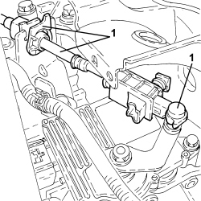
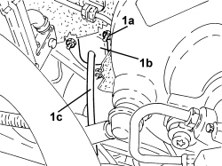
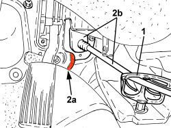
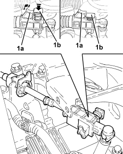

2135A12 GEAR ENGAGEMENT CABLE - R R
- Path
- Procedures > 21 GEARBOX UNIT > 2135 AUTOMATIC TRANSMISSION EXTERNAL CONTROLS > 2135A AUTOMATIC TRANSMISSION MANUAL CONTROLS > 2135A12 GEAR ENGAGEMENT CABLE - R R
- Kind
- repair procedure (removal / refitting; the operation number is the code)
- Applies to
- engines: 3.2 JTS; all production periods
- Interactive page
- https://sloeber94.github.io/elrnDB-aBrrSpdr/en/#/946004466
Applies to: engines: 3.2 JTS; all production periods
 Removing
Removing
 Refitting
Refitting- Place the gear lever in position "N".
Op. 5530B52 BATTERY SUPPORT/DRIP TRAY - R.R
Op. 2135A16 AUTOMATIC TRANSMISSION LEVER HANDLE - R R
Op. 7045A10 FRONT SEAT (ONE), LEFT OR RIGHT - R.R.
(left and right sides).
Op. 7040L37 GEAR LEVER TRIM - R.R
Op. 3380A44 HANDBRAKE/LINKAGE PROTECTION - R+R
Op. 7040L20 TUNNEL COVER - R.R
Op. 7040L23 TRIM ON TUNNEL COVER - R.R.
Op. 7040A65 CONSOLE SIDE CLOSING (ONE) - R.R.
Op. 7040L74 TUNNEL TRIM MOUNTING BRACKET/SUPPORT - R.R.
Op. 2135A10 AUTOMATIC TRANSMISSION MANUAL CONTROL LEVER AND SUPPORT - R + R AND OVERHAUL
1. Disconnect the gear selection cable from the gear selector and reaction bracket.

Applies to: engines: 3.2 JTS; all production periods
1. Undo the nuts (1a) fixing the gear engagement cable (1c) seal (1b) to the engine compartment bulkhead.

Applies to: engines: 3.2 JTS; all production periods
1. Open the gear engagement cable retaining clip.
2. Adjust the right lower edge of the pedal mounting (2a) to remove the gear engagement cable complete with seal (2b).

Applies to: engines: 3.2 JTS; all production periods
Refitting
Removing- Place the gear engagement cable complete with seal in its housing inserting it via the passage in the engine compartment bulkhead.
- Close the gear engagement cable retaining clip.
- Connect the end of the gear engagement cable to the gear engagement lever.
- Fasten the gear engagement cable to the special groove for the geaer engagement lever support using the locking bush.
- Place the gear lever support in its housing and secure it tightening the bolts to the recommended torque.
- Place the sound insulation cover for the gear lever support in its housing.
Op. 2135A10 AUTOMATIC TRANSMISSION MANUAL CONTROL LEVER AND SUPPORT - R + R AND OVERHAUL
Op. 7040L74 TUNNEL TRIM MOUNTING BRACKET/SUPPORT - R.R.
Op. 7040A65 CONSOLE SIDE CLOSING (ONE) - R.R.
Op. 7040L23 TRIM ON TUNNEL COVER - R.R.
Op. 7040L20 TUNNEL COVER - R.R
Op. 3380A44 HANDBRAKE/LINKAGE PROTECTION - R+R
Op. 7040L37 GEAR LEVER TRIM - R.R
Op. 7045A10 FRONT SEAT (ONE), LEFT OR RIGHT - R.R.
(left and right sides).
Op. 2135A16 AUTOMATIC TRANSMISSION LEVER HANDLE - R R
- Tighten the nuts securing the seal for the gear engagement cable to the engine compartment bulkhead to the recommended torque.
- Fit the quick-fit for the gear engagement cable in the bracket and fasten it by pressing manually until it is secured.
- Connect the end of the gear engagement cable to the gear selector lever ball joint.
1. Prepare the auto-adjustment device (quick adjuster) located on the gear selection cable by pulling the component (1a) backwards and lowering the spring (1b); release the component (1a) to keep the spring (1b) in position.

Applies to: engines: 3.2 JTS; all production periods
- Manoeuvre the gear lever and check that it can be heard clicking into the different positions.
Topics linked from this page (11)
- 2135A10 AUTOMATIC TRANSMISSION MANUAL CONTROL LEVER AND SUPPORT - R + R AND OVERHAUL
- 2135A16 AUTOMATIC TRANSMISSION LEVER HANDLE - R R
- 3380A44 HANDBRAKE/LINKAGE PROTECTION - R+R
- 5530B10 BATTERY - R+R
- 5530B52 BATTERY SUPPORT/DRIP TRAY - R.R
- 7040A65 CONSOLE SIDE CLOSING (ONE) - R.R.
- 7040L20 TUNNEL COVER - R.R
- 7040L23 TRIM ON TUNNEL COVER - R.R.
- 7040L37 GEAR LEVER TRIM - R.R
- 7040L74 TUNNEL TRIM MOUNTING BRACKET/SUPPORT - R.R.
- 7045A10 FRONT SEAT (ONE), LEFT OR RIGHT - R.R.